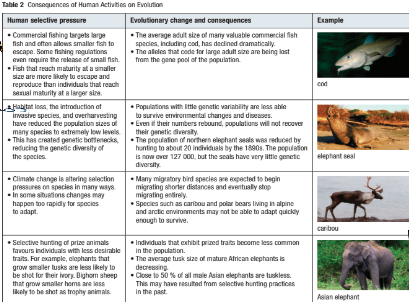
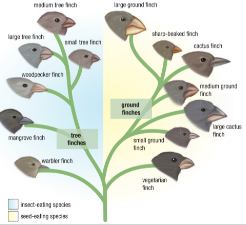
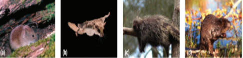

Natural Selection
Types of Natural Selection
Directional Selection
Stabilizing Selection
Disruptive Selection
Sexual Selection
Callout
Directional Selection


Directional selection occurs when selection favours individuals with a more extreme variation of a trait.
Callout
Stabilizing Selection


Stabilizing selection (not to be confused with negative or purifying selection) is a type of natural selection in which the population mean stabilizes on a particular non-extreme trait value.
Stabilizing selection is the opposite of disruptive selection. Instead of favoring individuals with extreme phenotypes, it favors the intermediate variants.
Callout
Disruptive Selection
Disruptive selection, also called diversifying selection, describes changes in population genetics in which extreme values for a trait are favored over intermediate values.

For example, two species of plants with different-sized flowers may be available as a food source for the hummingbird population

Callout
Sexual Selection
Sexual selection is the favouring of any trait that specifically enhances the mating success of an individual.

The most common forms of sexual selection are female mate choice and male-versus-male competition.

Callout
Evolutionary Change without Selection
Genetic Drift:
Genetic drift is changes to allele frequency as a result of chance; such changes are much more pronounced in small populations.


Genetic drift occurs in all populations of non-infinite size, but its effects are strongest in small populations.
Callout
Evolutionary Change without Selection
Bottlenecks:
Genetic bottlenecks result in a loss in genetic diversity following an extreme reduction in the size of a population.

For example, if an initial population of 10,000 individuals is reduced to only 50 individuals, they are unlikely to contain all of the alleles found in the larger population.
Callout
Evolutionary Change without Selection
Bottlenecks can have adverse consequences for populations. Cheetahs, for example, have very little genetic variability. As a result they are vulnerable to disease.

Callout
Evolutionary Change without Selection

The Founder Effect:
Founder effect genetic drift results when a small number of individuals separate from their original population and establish a new population

Callout
Consequences of Human Influence



What is a species?
Callout
.png)

A biological species, according to one definition, includes all the members of a population that can interbreed under natural conditions. Individuals of different species cannot interbreed under natural conditions and are described as being reproductively isolated from one another.
Populations of different species do not exchange genetic information—they have different gene pools. Defining a species as all members of a population with a common gene pool has advantages.
Modes of Speciation
New species can evolve under a variety of circumstances. However, this process always includes the evolution of distinct features that isolate the new species reproductively, and therefore genetically, from other species.
Allopatric Speciation
Most new species form when a single species is separated into two geographically isolated populations. This is called allopatric speciation. Once populations are physically
separated, they can no longer exchange genetic information.
Sympatric Speciation
A new species can also evolve from within a large population. This process, called sympatric speciation, occurs when individuals within a population become genetically
isolated from the larger population. Such isolation may occur gradually or suddenly.
Human Influence on Speciation
The separation of a single population into two isolated populations can lead to speciation, but it can also threaten the survival of species. Many human activities, such as agricultural expansion and the construction of roads, are causing once large habitats to be fragmented into smaller areas that effectively isolate populations.
Human Influence on Speciation
A recent study of timber rattlesnake populations in the state of New York revealed that roadways are a significant barrier to gene flow and that genetic diversity within each isolated population was low. Similar research in China has shown that the survival of giant pandas, a critically endangered species,is threatened by their separation into small isolated populations in patches of bamboo forest.
Patterns of Evolution
As you have learned, natural selection leads to predictable outcomes:
- Closely related species share many homologous structures, even though they no longer serve the same function.
- Species have vestigial structures and pseudogenes that once served a useful purpose in their ancestors.
- Remote islands are inhabited by unique species that are descended from a few individuals of species able to reach them across wide expanses of ocean.
When considered on a grander scale, these and other predictable outcomes lead to recognizable patterns.
Callout
Adaptive Radiation

Adaptive radiation occurs when a single species evolves into a number of distinct but closely related species. Each new species fills a diff erent ecological niche. This process usually occurs when a variety of new resources become available—resources that are not being used by other species.
Thirteen species of Darwin’s finches are the result of recent adaptive radiation and fill many different ecological niches. Genetic evidence shows they all evolved from a single common ancestor species.

Convergent vs. Divergent Evolution
Divergent Evolution
In any ecosystem, there are a number of major ecological roles. All natural ecosystems, for example, have producers, consumers, decomposers, and scavengers. These major roles are never filled by a single species. Consider the ecological role of herbivores. Not surprisingly, natural selection has favoured the evolution of a wide variety of herbivores. For example, herbivorous mammals come in a variety of shapes, sizes, and specialties.
Natural selection has favoured their divergent evolution into a great variety of species. Northern Ontario forests are home to many rodents, the largest taxon of mammals . These rodents provide an excellent example of divergent evolution. All of these species evolved from a single common ancestor that existed millions of years ago.

Ontario has over 20 species of closely related rodents, a group of mammals that has undergone significant divergent evolution. Species include the (a) deer mouse, (b) flying squirrel, (c) porcupine, and (d) beaver.
Convergent Evolution
Evolutionary biology predicts that when a single species is placed under two different sets of selective pressures, it is likely to undergo divergent evolution. What if the situation were reversed? What if two species were placed under similar selective pressure? Convergent evolution occurs when two different species, or taxa, evolve to occupy similar ecological niches. Patterns of convergent evolution are often most obvious when you compare different geographic regions.
One of the clearest examples is observed in two groups of plants. Cacti evolved in the deserts of South America and are native only to the Americas.
Euphorbia look similar to cacti, but first evolved in the deserts of South Africa and now occur in Africa, Eurasia, and Australia.
(a) Cacti and, (b) euphorbia have evolved similar features in
response to their hot dry environments.
Coevolution
A species experiences coevolution when its evolutionary success is closely linked to that of another species. For example, certain plants have evolved hard protective
shells to protect their seeds, while some seed-eating mammals have evolved powerful jaws and teeth for chewing through hard shells.
(a) Brazil nut trees have evolved extremely hard protective shells.
(b) The agouti is the only mammal with jaws and teeth strong enough to bite open the shell.